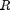
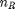
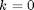
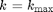
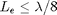
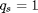
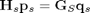
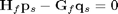

Fictitious eigenfrequencies and the CHIEF method
This tutorial introduces how to use the toolbox NIHU to solve a simple exterior acoustic radiation problem with mitigating the problem of fictitious eigenfrequencies.
The problem is radiation by a pulsating sphere to the infinite exterior domain. The boundary conditions are defined as prescribed pressure derivative (normal velocity) on the sphere surface. The computed surface pressures are compared with analytical solutions. It is shown that at the resonance frequencies of the internal domain, the deviation between analytical and numerical solutions becomes high. The Combined Helmholtz Integral Equation Formalism (CHIEF) is applied to mitigate this fictitious eigenfrequency problem.
Contents
Surface mesh generation
Generate a sphere geometry with given radius  and division parameter .
R = 1; % radius nR = 8; % division parameter mesh = create_sphere_boundary(R, nR);
The frequency range is defined between  and , where the maximal applicable frequency is determined by the rule of thumb , and is computed by the toolbox function bemkmax. The frequency range is selected as non uniform, so that a large number of frequency values is located around some preselected frequencies.
kmax = min(bemkmax(mesh, 8)); % maximal wave number mk = [pi 2*pi]; % preselected frequencies sk = [.01 .01]; % standard deviation at selected freq. kvec = linspace(0, kmax, 1000); % wave number vector to define PDF fk = ones(size(kvec))/kmax; % uniform PDF for iP = 1 : length(mk) % generate Gaussian peaks in frequency PDF fk = fk + exp(-.5*((kvec-mk(iP))/sk(iP)).^2)/sqrt(2*pi*sk(iP)); end Fk = cumsum(fk) / sum(fk); % frequency CDF nK = 30; % number of frequencies kvec = interp1(Fk, kvec, (1:nK)/nK); % trans. with inverse CDF
Subscript indices must either be real positive integers or logicals.
Error in sph_puls_chief (line 35)
fk = fk + exp(-.5*((kvec-mk(iP))/sk(iP)).^2)/sqrt(2*pi*sk(iP));
Boundary conditions
The boundary conditions are defied on the sphere element corners (nodes) as a uniform normal derivative .
nNodes = size(mesh.Nodes,1); qs = ones(nNodes,1);
CHIEF points
A number of randomly distributed internal points are selected with the function chiefgen. These points are used as overdetermination points in the system of equations.
nChief = 50; xChief = chiefgen(mesh, nChief);
Generate BEM matrices and solve system
The original system of equations reads as

An additional system of equations is generated by writing the Helmholtz equation

with the CHIEF field points inside the domain. The combined system of equations is solved in a least squares sense.
ps0 = -1 ./ (1+1i*kvec*R); % analytical pressure solution ps = zeros(nNodes, nK); % surface press. without mitigation psc = zeros(nNodes, nK); % surface press. with the CHIEF method e = zeros(1, nK); % relative error without mitigation ec = zeros(1, nK); % relative error with mitigation for iK = 1 : nK % for each frequency value disp([iK nK]); k = kvec(iK); [H, G] = bemHG(mesh, k, 'lin'); % BEM matrices [Hc, Gc] = bemHG(mesh, k, 'lin', xChief); % CHIEF matrices ps(:,iK) = H \ (G * qs); % solve the system psc(:,iK) = [H; Hc] \ ([G; Gc] * qs); % solve overdetermined sys. e(iK) = norm(ps(:,iK)-ps0(iK))/norm(repmat(ps0(iK),nNodes,1)); ec(iK) = norm(psc(:,iK)-ps0(iK))/norm(repmat(ps0(iK),nNodes,1)); end
Plot results
The analytical solution with and without mitigation is plotted, as well as the relative error in both cases.
figure; subplot(2,1,1); semilogy(kvec, abs(mean(ps)), kvec, abs(mean(psc))); xlabel('kR [-]'); ylabel('Pressure magnitude'); legend('no mitigation', 'CHIEF'); subplot(2,1,2); semilogy(kvec, e, kvec, ec); xlabel('kR [-]'); ylabel('Relative error'); legend('no mitigation', 'CHIEF');